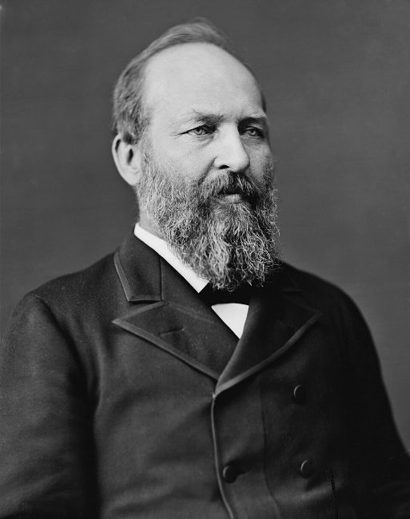
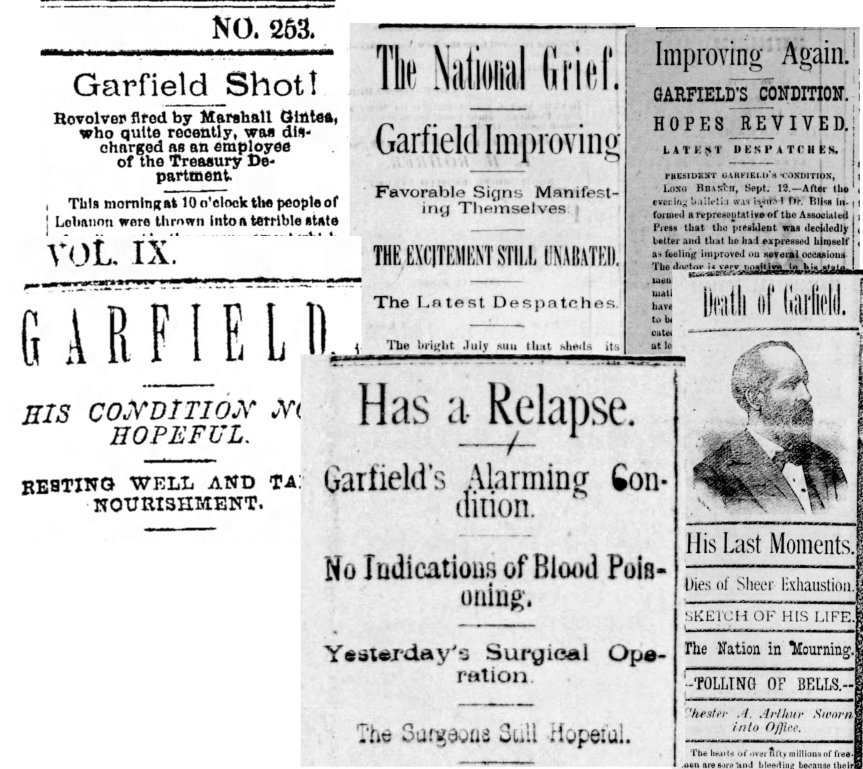
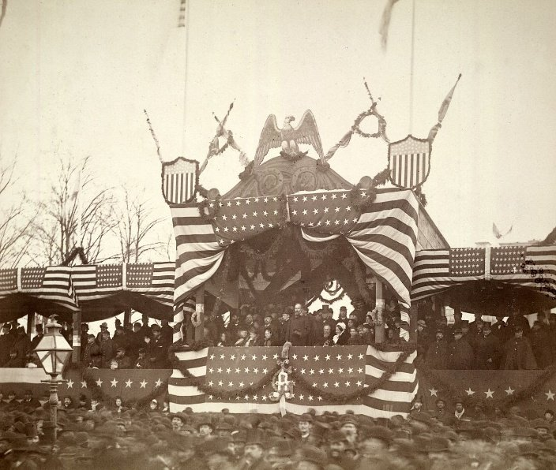
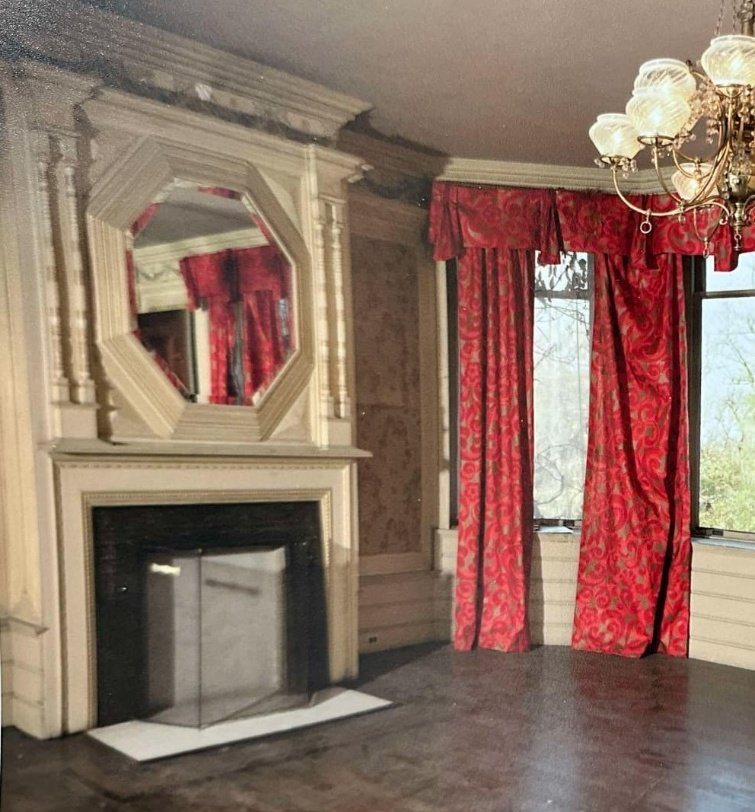
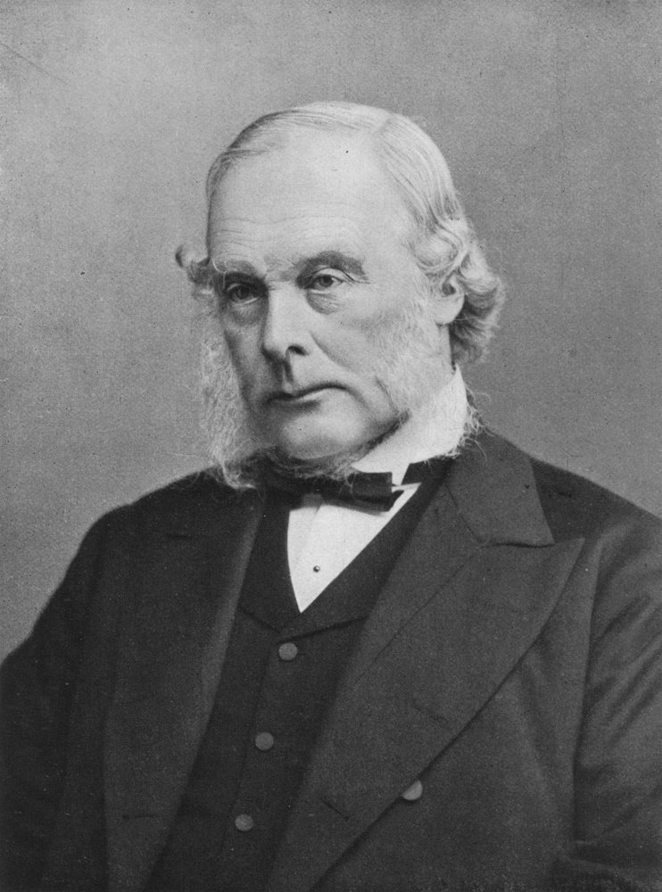
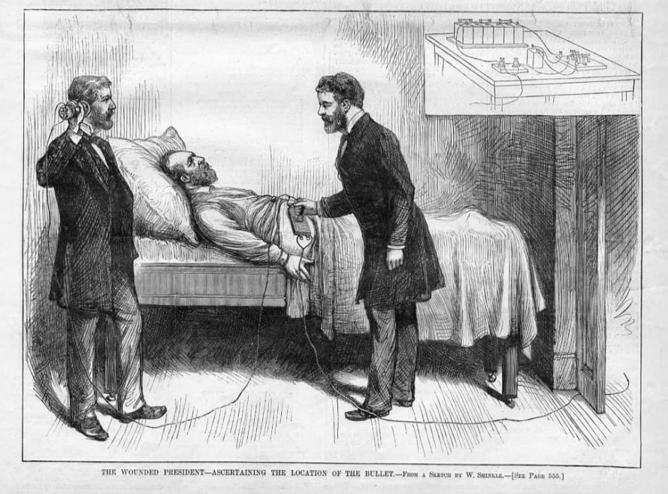
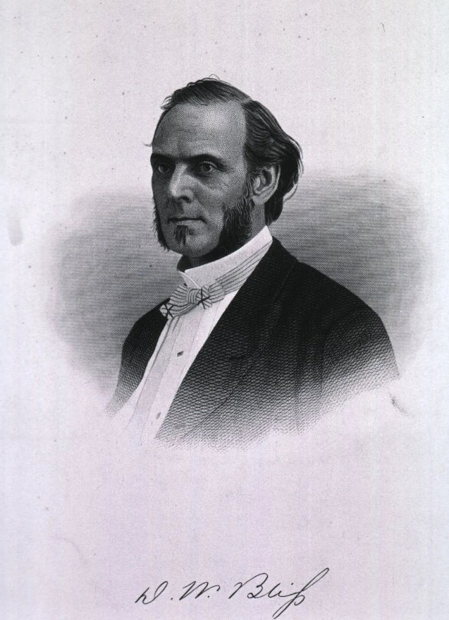

The presidency of James Garfield has returned to the public eye with the recent Netflix mini-series "Death by Lightning," based on the 2011 book "Destiny of the Republic" by Candace Millard. These new offerings cast our nation's 20th president in a favorable light — a man whose term was cut short by an assassin's bullet and medical ignorance.
Garfield suffered for 79 days, while the grieving nation was misled into believing he was growing stronger day by day. Newspapers across the country published frequent accounts, first of the shooting and then the stories of hopeful progress — including our own Lebanon Daily News.
But other than through newspapers, who knew how the story touched the lives of everyday people here in Lebanon, as it apparently did across the nation? But for an act of senseless, juvenile vandalism at Cornwall's Alden Villa, we might not have known. Read on.

James A. Garfield
In words meant to reassure his wife's concerns for his safety, James said, "Assassination can no more be guarded against than death by lightning — and it's best not to worry too much about either one."

Other than the specific violence that ended his life, the profound tragedy is the cutting short of a brilliant man destined to achieve a great presidency, given his passionate vision of restoring the hopes and trust of the American people and healing a still-divided nation.
Before serving as a general in the Civil War, Garfield's life was a story of growing up in poverty, in a log cabin, much like our notion of young Abraham Lincoln. He possessed great intellect, read voraciously, graduated from Williams College, studied law, and served as a minister in the Restoration Movement of the Second Great Awakening. His military service won recognition that led to his election to Congress in 1862, where he served nine terms. His credentials and an impassioned speech led to his unintended nomination for president in 1880.
Yet Garfield is ranked, as our commentators are prone to do, among the lowest of the presidencies — not because of his policies, but because he was rendered ineffective by the shortening of his term. He was cut down in his fourth month and suffered another 79 days before expiring.
The early months of his presidency had been occupied by cabinet appointments, foremost the controversy that defused the influence of Roscoe Conkling in national political affairs. There was no constitutional mechanism yet for the transfer of power to Vice President Chester A. Arthur (the 25th Amendment was not established until 1965). Congress passed no major legislation, and Cabinet members ran the administration within the status quo.
During his candidacy he had shown great promise of restoring integrity to the government. He advocated civil rights for every American, and won the respect and support of African Americans.
The title of Candace Millard's book, "Destiny of the Republic," was a phrase Garfield used in his inaugural address on March 4, 1881. Speaking of the recent end of slavery and the reunification of the nation after the Civil War, he said:
It has liberated the master as well as the slave from a degrading relationship. Under our Republic, all men being created equal, the nation has at last become a united people, and the destiny of the Republic is assured. James A. Garfield, Inaugural Address, March 4, 1881
For Garfield, the "destiny of the Republic" was to fulfill the vision of equality and healing after the Civil War. But for his assassination, the course of civil rights might have fared far better in the last century.
A Tribute in Pencil
Among local citizens who found themselves absorbed by the suffering of the ailing president were the craftsmen putting the finishing touches on the bridal mansion that Anne Coleman Alden had commissioned for her son and his bride.
Robert Percy Alden (1848–1909) and Mary Ida Warren (1852–1899) married in Paris on June 17, 1878. Construction began in 1880 and continued through 1881. Throughout the summer, when the assassination occurred on July 2nd, workers were busy carving and engraving the wooden moldings and other features of Stanford White's whimsical summer-cottage design.
As with citizens both local and nationwide, the workmen's hearts were buoyed and then cast down by alternating daily newspaper bulletins — first of Garfield's "improving condition," then his "reversals." In the first week of September, with his convalescence seeming assured, he was moved to Francklyn Cottage by the seashore at Elberon, Long Branch, New Jersey, on a special rail car that carried his bed. Workers had laid temporary rails to bring him right to the front porch, but it took a crowd of bystanders to push the railcar the final distance.
Garfield enjoyed the fresh ocean air for two weeks with his wife beside him, before succumbing on the evening of September 19th, dead at age 49.
The following morning at Cornwall's Alden Villa, heavy-hearted from the news, one of Stanford White's workers was putting finishing touches to the elaborate woodwork over the parlor fireplace. He took the moment to commemorate Garfield's passing with a pencil inscription: "Sept 20th 1881 President Garfield Dead."
Not long after, the mantel was finished with an exquisite, beveled mirror, covering the inscription for all posterity — much as stonework seals Garfield's remains in his memorial crypt in Lake View Cemetery, Cleveland.

The mirror and the fireplace graced the mansion's parlor for about 120 years. But then, senseless adolescents smashed the mirror in a spree of vandalism as they wreaked damage throughout the old mansion.
The inscription was rediscovered during the recent restoration of Alden Villa by owner Harvey Turner, and has since become an object of interest to visitors touring the mansion. Turner says he intends to preserve this bit of history behind a piece of protective glass.
Some Odd Bits of History
At least three familiar sub-plots of recognizable American history accompany the tragedy of Garfield's 79 days of suffering.
The orbits of Joseph Lister and Alexander Graham Bell passed in close proximity to Garfield and his family, all of whom attended the 1876 Centennial Exhibition in Philadelphia. This series previously described the Coleman family's investment and presence at that same historic venue.
Joseph Lister

British surgeon Joseph Lister had been studying bacteria based on the work of Louis Pasteur, and published several papers in the 1860s on the use of antiseptics to sterilize operating rooms and surgical instruments. He was met with controversy, accusations of plagiarism, and mostly disdain from a surgical community that rejected the notion of "invisible germs."
It took almost 25 years to win acceptance, but Lister is now considered by many to be "the father of modern surgery."
Alexander Graham Bell
At the Centennial Exhibition, during his two-year tour of North America promoting his theories, Lister had been given a small upstairs room, out of the way in the great hall, where he discussed his principles with those who sought him out.

Downstairs in that same hall, meanwhile, crowds swarmed the exhibit where Alexander Graham Bell demonstrated his telephone.
Five years later, Bell would be working in a lab in Washington, D.C., following the daily news of Garfield's declining health. Doctors were obsessed with locating the bullet still lodged in the president's back.
His work with the telephone inspired him to create an "induction balance" that could locate metal objects (anyone who has used a modern metal detector at the beach might be amused by this early connection). Bell approached the White House doctors, offering to use his device to find the bullet. Through a series of attempts, hampered by interference from the chief surgeon, he was unsuccessful. Frustrated, he continued experimenting in his lab, but fell short of helping his president.
Dr. D. Willard Bliss

After Garfield was brought to the White House, a number of doctors assembled to lend assistance. Robert Todd Lincoln, Garfield's secretary of war, had witnessed the shooting first-hand. In the heat of the moment he recalled the doctor who had attended his own father sixteen years earlier, and summoned Dr. Bliss to Garfield's bedside.
Unlike Abraham Lincoln's wound, James Garfield's injury was not immediately life-threatening; the bullet had missed his major organs. Though his assassin was tried and eventually hanged for the crime, many accounts consider the actions of the chief surgeon the true cause of death.
Unfortunately, Robert had been unaware of Bliss's woeful reputation. His notoriety dated back almost thirty years, to selling quack medical cures, accepting bribes, and providing poor treatment to wounded soldiers at Bull Run.
With Lincoln's endorsement, Bliss managed to insert himself as chief surgeon and dismissed essentially all others, making himself the sole caregiver. He authored the optimistic daily reports to the press, with only occasional mention of "setbacks."
Giving him the benefit of the doubt, perhaps it was professional pride, or the chance to redeem a tarnished reputation, that drove him to labor tirelessly for months.
Accounts describe Bliss's daily attempts to locate the bullet by probing the president's wound with his unsanitary finger — almost certainly the source of the infection that eventually killed Garfield.
Had Bliss heeded Joseph Lister's techniques, or trusted Bell's induction balance to locate the bullet, our nation's history might read very differently.
Candace Millard's book "Destiny of the Republic" is recommended by this author, as are the numerous resources on this history found on the internet.
Harvey Turner and Alden Villa, for the discovery, preservation, and sharing of the pencil inscription that inspired this story.
Originally published on LebTown, January 26, 2026.